Every agent moves at a constant speed. At each step it looks at every agent within one radius R, takes their average heading, adds a random angle (the noise, eta, drawn evenly from −eta/2 to +eta/2), and moves one step that way. This is the Vicsek model (Vicsek et al., 1995). The order parameter measures how aligned the flock is: add every heading as an arrow of length 1 and divide by the number of agents, giving 1 for a perfect flock and close to 0 for random headings. The susceptibility measures how much the order swings: N times its variance. It peaks where order is about to break. In systems at equilibrium that is exactly where a small push (one member turning) has the largest effect on the whole; a flock is not at equilibrium, so for flocks this link is approximate. The same measure, and how it grows with group size, has been used to probe near-criticality in real midge swarms (Attanasi et al., 2014).
LIMINAL Layer 2 Results
Layer 2 is the swarm layer of LIMINAL: many cheap drones that flock, spread out and decide together without a commander. These simulations test the ideas behind it before any hardware is bought, and they size the FPGA and the motion-capture demo.
In short
The Verilog flock engine matches the Python reference model exactly in all eleven simulation checks (64 to 256 agents, 1 to 64 lanes, the walled demo arena, and a recorded ground-station session). Estimated size for 4,096 agents: 12% of the XCKU5P's logic, 2% of its DSP slices.
Fluctuations at the transition grow from 0.24 with 8 agents, a plateau barely above the 0.20 of random headings, to about 70 with 4,096.
That is about how many agents fit a 4 × 4 m net with real drones. Thousands either freeze in order or move in structure too fine for a drone to follow.
Loop latency budget. In an ordered flock, drone misalignment goes from 13° at 20 ms to 15° at 100 ms and 30° at 400 ms. Losing half the packets adds about 1°.
The closest two real drones came with no safety layer. With a push-apart layer at 0.5 m the worst case was 38 cm.
A ground robot that only drives, and is seen, steers the flock with no radio: 0.89 of the flock's motion follows it at low noise, 0.30 at the critical point. One UGV's grip weakens as the flock grows; how many UGVs a large flock needs is not settled.
Of the search time a jammed radio costs, recovered by data tags dropped every 10 m; a later wave that reads them is as fast as one handed the whole map. Reservoir computing (memory 0.11 of 10) and Koopman/DMD prediction (no better than one-number rules) did not hold up.
Where a simple controller settled the noise for 512 agents, starting too ordered and too disordered. Both are inside the sweep's broad maximum (2.3–2.7).
The model in one paragraph
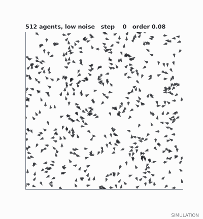
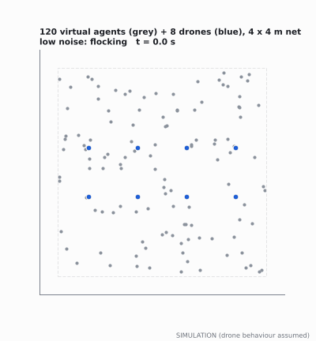
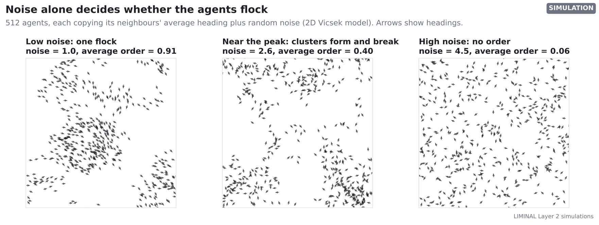
1. Eight agents cannot show a real transition
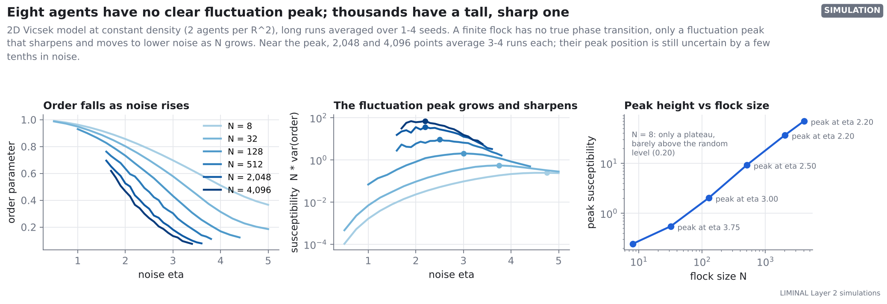
What it shows
Order falls smoothly as noise rises for every flock size. For 8 agents there is no peak: the fluctuations rise to a plateau of about 0.24 from noise 4.00 to the end of the sweep at 5, barely above the 0.20 that completely random headings give; whether they fall again before the largest possible noise (2π) was not simulated. From 32 agents up a clear peak appears; it grows to about 70 at 4,096 agents and moves from noise 3.75 (32 agents) to about 1.8–2.2.
How to read it
Left: one line per flock size, darker for larger flocks. Middle: the same runs, now showing fluctuations on a log scale; dots mark each peak. Right: peak height against flock size on log-log axes. The 2,048 and 4,096 curves average 3 to 4 runs per point near the peak, so they are smoother than in the first version of this report, but still uneven: near the transition the flock changes slowly, so even a long run holds few independent samples.
What it means for LIMINAL
A finite flock has no sharp phase transition, only a peak that sharpens as the flock grows (finite-size scaling). Eight drones on their own have no clear peak to sit at, so any claim about criticality has to come from larger flocks: in simulation now, and in real time on the FPGA later. Even with extra runs, the large-flock peak positions are uncertain by a few tenths in noise (see the range column below).
| Agents | Noise at the highest point | Noise range that cannot be told apart | Susceptibility there | Order there | Runs |
|---|---|---|---|---|---|
| 8 | 4.75 | 4.00–5.00 | 0.24 | 0.39 | 4 |
| 32 | 3.75 | 3.25–4.00 | 0.55 | 0.37 | 3 |
| 128 | 3.00 | 2.80–3.40 | 2.0 | 0.43 | 2 |
| 512 | 2.50 | 2.30–2.70 | 9.3 | 0.46 | 1 |
| 2,048 | 2.20 | 2.00–2.40 | 36.8 ± 1.3 | 0.44 | 4 |
| 4,096 | 2.20 | 1.80–2.20 | 70.3 ± 2.4 | 0.37 | 4 |
Uncertainty: where a point has at least two runs known individually (2,048 and 4,096 agents near the peak), ± is the standard error from the spread between runs, and the range spans every noise value within two combined standard errors of the highest point. Elsewhere the runs were averaged when saved, or there is one run, so the range is the noise values within 15% of the highest point. Error estimates from blocks within one run were used in the first version of this report; near the transition the order changes so slowly that they understated the uncertainty by up to five times, so they are not shown.
Model details: 2D Vicsek, periodic box, 2 agents per R², step length 0.03 R. Standard caution: in very large systems the Vicsek transition becomes discontinuous, with travelling bands (Chaté et al., 2008); at these sizes it behaves as a smooth crossover.
2. The FPGA's integer maths behaves like the exact model
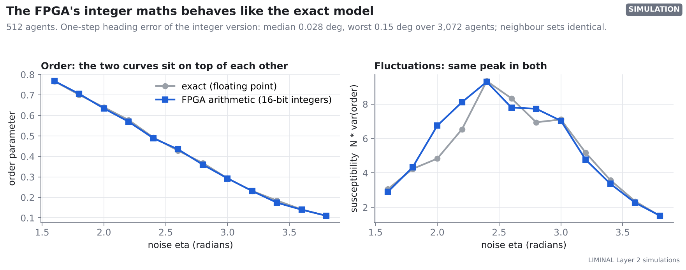
What it shows
Using only 16-bit integers, a 1,024-entry cosine table and a CORDIC arctangent, the integer model reproduces the exact model. From the same state, the average-heading error is 0.028° median and 0.15° worst, and every agent finds exactly the same neighbours. (At this box size that part is guaranteed: the exact model starts from the integer positions converted without rounding, so it checks the heading maths rather than the neighbour search.)
How to read it
Grey is the exact model, blue the integer model. On the left the curves overlap. On the right the peak is in the same place; the wiggles are run-to-run noise from a single run per point.
What it means for LIMINAL
The FPGA can use cheap integer hardware without changing the physics. Positions and headings that wrap around 65,536 give the periodic box for free.
The Verilog engine
The engine in fpga/rtl/vicsek_engine.v processes the flock in blocks of P lanes. Each lane holds one agent, the whole flock streams past one agent per clock tick, and each lane adds up the neighbours it sees. A CORDIC unit then turns the sums into a heading, and the new state is written to a second memory bank so every agent moves together. In simulation (Icarus Verilog) it matches the Python model bit for bit: 64 agents for 32 steps with 1, 4, 8 and 64 lanes, and 256 agents for 16 steps with 16 lanes.
Version 1.1: the demo arena
The demo is a walled 4 × 4 m net, not a periodic box, with 8 real drones among the virtual agents. Version 1.1 of the engine adds exactly that: soft walls that push agents back from the edge, mirroring at the boundary, and plain distances instead of wrapped ones. The drones are ordinary agents: before every step the laptop writes in their camera-measured positions. In simulation it again matches the Python model bit for bit: the 128-agent demo flock for 40 steps with 1, 8 and 16 lanes, and a noisy 64-agent flock with 4 and 64 lanes, with drone positions written before every step. One step of the demo flock takes 1,592 clock ticks (the testbench counts one more for the start handshake), about 6.4 microseconds at an assumed 250 MHz, against a 20 ms control tick. Even at a quarter of that clock it would take under 30 microseconds. An open-source estimate puts the 128-agent demo build at about 26,840 LUTs (12.4% of the chip) and 43 DSP slices.
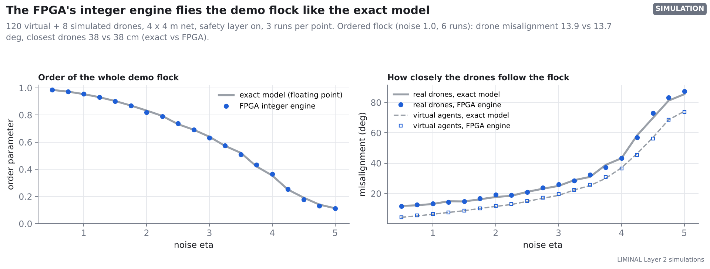
Run through the full hybrid demo, the integer engine flies like the exact model: in the ordered flock, drone misalignment was 13.9° with the exact model and 13.7° with the integer engine, and the closest two drones came 38 and 38 cm apart. The order curves agree within two standard errors (3 runs each) at every noise level except 4.75 (integer engine -0.009); the largest difference anywhere is 0.014 in an order parameter that runs from 0 to 1.
An open-source synthesis estimate (Yosys, not Vivado) for 4,096 agents and 16 lanes: about 25,793 LUTs (12%), 3,797 flip-flops, 35 DSP slices (2%) and 18.0 block RAMs (4%). One step takes 1,062,400 clock ticks, about 4.2 ms at an assumed 250 MHz. That clock is not verified: each lane does two multiplies, a cosine-table read and several compares in one clock tick, which may need pipelining to reach 250 MHz. Vivado's timing report will give the real clock; fpga/vivado/build.tcl runs that build with one command.
3. Which hybrid set-up works in a 4 × 4 m net
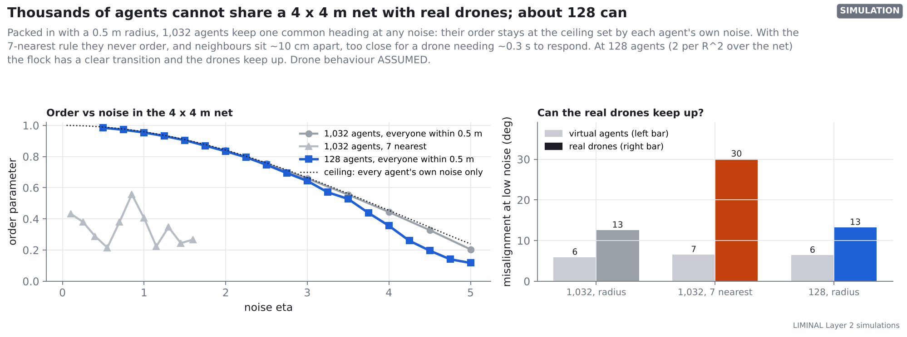
What it shows
With 1,032 agents and a 0.5 m radius, each agent has about 70 neighbours (the flock keeps 0.3 m inside the net, so it uses a 3.4 × 3.4 m area), and the flock never loses its common heading. Even with every neighbourhood perfectly aligned, each agent's own noise caps the order parameter at sin(η/2)/(η/2), which is 0.24 at noise 5; the dense flock sits at that ceiling at every noise level (0.20 at noise 5), so it has no transition to study. With the 7-nearest rule (as starlings do; Ballerini et al., 2008) the flock never reaches a well-ordered state (order at most 0.56 at noise 0.1 to 1.6, one run per noise value), and the drones are badly misaligned with their neighbours (30° against 7° for virtual agents), so that set-up fails for the opposite reason. Mixing real robots with virtual ones follows earlier mixed-reality robotics work (Hönig et al., 2015) and motion-capture swarm set-ups such as Crazyswarm (Preiss et al., 2017). At 128 agents (2.8 per R² in the area the flock uses; 2 per R² over the whole net) the flock has a clear transition and the drones stay within 13° (virtual: 6°).
How to read it
Left: order against noise for each set-up; the dotted line is the ceiling set by each agent's own noise. Right: misalignment at low noise for virtual agents and real drones. Misalignment is the angle between where a drone actually went over 0.2 s and its neighbours' average heading.
What it means for LIMINAL
A large virtual flock cannot share a small net with real drones. Either pack too many into the radius rule (physics frozen) or follow nearest neighbours that sit ~10 cm apart, which a drone needing ~0.3 s to respond cannot track. The demo should run about 120 virtual agents with the 8 drones in the net, and show large flocks on screen separately.
4. Latency budget and lost packets
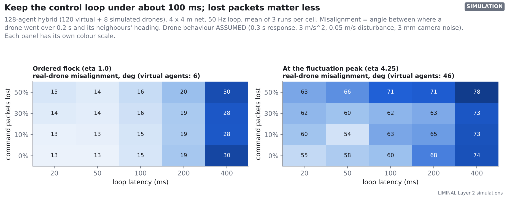
What it shows
In an ordered flock, misalignment is 13° at 20 ms, 15° at 100 ms, 19° at 200 ms and 30° at 400 ms. Losing half the command packets changed it by -1 to +2° across these latencies (3 runs per cell). At the fluctuation peak everything is noisy: 55° at 20 ms and 74° at 400 ms, against 46° for virtual agents.
How to read it
Each cell is the mean of 3 runs of 40 s. Rows are the share of command packets lost (the drone keeps its last command); columns are the full camera-to-drone loop delay. Each panel has its own colour scale.
What it means for LIMINAL
Design the loop for under 100 ms end to end (camera exposure, tracking, swarm maths, radio). Wi-Fi packet loss in a crowded hall is a smaller risk than latency. Because the swarm maths for 128 agents takes well under a millisecond on a laptop, the latency budget is set by the cameras and the radio, not the computer.
5. Design choices for the real drones
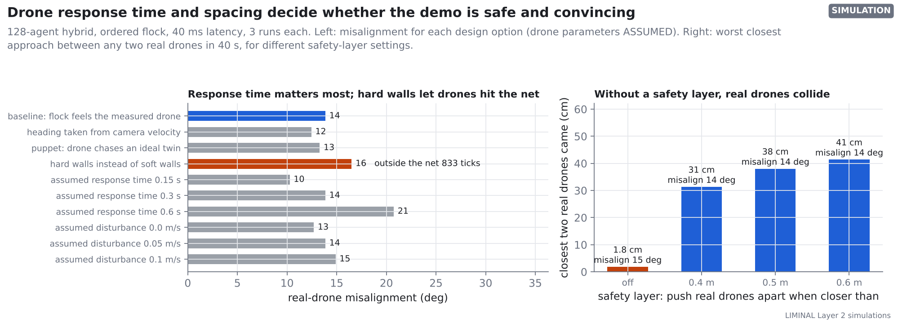
What it shows
The drone's response time is the biggest lever: 10° at 0.15 s, 14° at 0.3 s, 21° at 0.6 s. Hard walls (agents bounce off the boundary) left drones outside the net for 833 of 2,000 ticks on average; soft walls with a 0.3 m margin kept them inside. Without a safety layer two drones came within 1.8 cm.
How to read it
Left: misalignment for each option, mean of 3 runs. Blue is the baseline used everywhere else, orange the option that breaks the net. Right: the worst closest approach between any two real drones over 40 s.
What it means for LIMINAL
Three must-haves for the demo: soft walls with a margin inside the net; a safety layer that pushes real drones apart (0.5 m gave a worst case of 38 cm at no cost in alignment); and a measured, ideally tuned, drone response time. The “embodied” coupling (the flock feels where the drone really is) and the “puppet” one (the drone's agent moves as the flock says, wherever the drone is) gave about the same alignment (14° and 13°), but with the puppet coupling the drones came closer together (30 cm against 38 cm at worst).
6. How much hardware the swarm maths needs
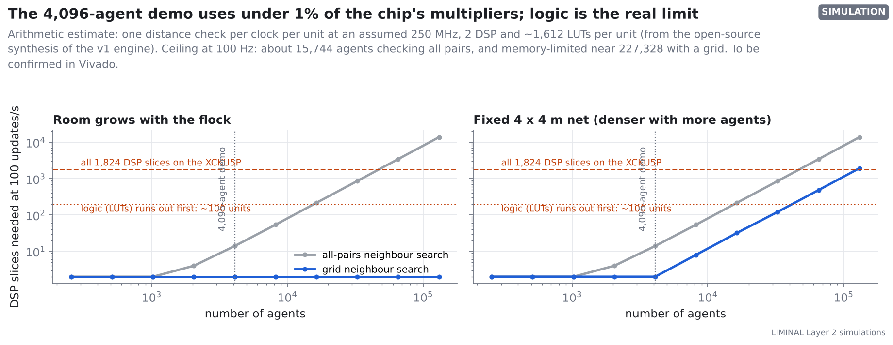
What it shows
Checking every pair, the XCKU5P could update about 15,744 agents 100 times a second, limited by its logic (about 100 lanes, using at most 75% of the chip's LUTs); sorting agents into grid cells first raises that to about 227,328, limited by on-chip memory. That grid figure is an upper bound: it ignores the cost of sorting the agents into cells and the memory for the cell lists. The 4,096-agent case needs about 14 DSP slices.
How to read it
Log-log axes. Grey checks every pair; blue uses a grid. The red line is all the DSP slices on the chip. The dotted line is where the chip's logic (LUTs) runs out, at about 1,600 LUTs per lane from the open-source synthesis of version 1; logic, not DSP slices, is the real limit. This is arithmetic, assuming one distance check per lane per clock at an unverified 250 MHz and two copies of every agent's record in memory, and needs confirming in Vivado.
What it means for LIMINAL
The chip is far larger than the 8-drone demo needs. Its value is in flocks of tens of thousands, fixed timing, and a ground station that runs without a laptop.
Honest comparison with a CPU
The same model on one core of the shared cloud machine used for these runs (a laptop core is faster):
| Agents | ms per step | steps per second |
|---|---|---|
| 128 | 0.1 | 14167 |
| 512 | 0.3 | 3401 |
| 4,096 | 2.9 | 342 |
| 16,384 | 11.3 | 89 |
| 65,536 | 62.4 | 16 |
A laptop, and even the browser explorer, runs 4,096 agents in real time. Version 1 of the FPGA engine (4.2 ms per step at 4,096 agents and 16 lanes) is a correctness milestone, not a speed win. The FPGA pulls ahead at tens of thousands of agents with more lanes, a shared CORDIC and grid neighbour search. A desktop GPU would also be fast at this; the FPGA's distinct strengths are fixed timing and running standalone.
7. Holding the flock at its peak, and switching modes
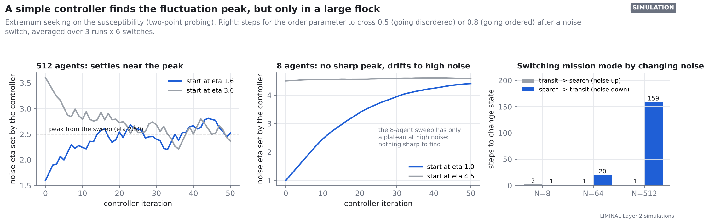
What it shows
For 512 agents the controller settles near noise 2.55 from below and 2.52 from above, inside the sweep's broad maximum (highest point 2.50; 2.3 to 2.7 within 15% of it, one run per noise value). For 8 agents the curve is almost flat at high noise: the controller drifted up to 4.41 (started at 1.0, still creeping up when the run ended) and 4.59 (started at 4.5), onto the plateau, where it has nothing sharp to hold. Raising the noise drops the order below 0.5 within 1 to 2 steps; re-forming order (above 0.8) takes 20 steps for 64 agents and 159 for 512.
How to read it
The controller probes slightly above and below its current noise, measures the susceptibility at each, and steps toward the larger. Dashed lines mark the peak from the sweep. Right: mean over 3 runs and 6 switches.
What it means for LIMINAL
A swarm can find its own most responsive setting using only its order parameter, which the swarm layer computes anyway, but only when the flock is large enough to have a clear peak. With 8 drones it would need the virtual flock around them. Switching between search (disordered) and transit (ordered) by changing one number works, and the slow direction is re-forming order. The fast direction is fast partly by construction: one step at noise 4 already scrambles headings enough to push the order below 0.5.
| Agents | Steps to disorder (noise up) | Steps to re-order (noise down) |
|---|---|---|
| 8 | 2 | 1 |
| 64 | 1 | 20 |
| 512 | 1 | 159 |
Steps are counted from the change of noise to the first step past the threshold, averaged over 3 runs and 6 switches. With 8 agents the order parameter jumps across both thresholds by chance within a step or two, so their switching times say little about the flock.
8. Two ideas tested and set aside
The first version of this report suggested two improvements: short-range repulsion for every agent, and a local order measure for the walled net. Both were tested in Sim 4e. Neither earned its place in the demo.
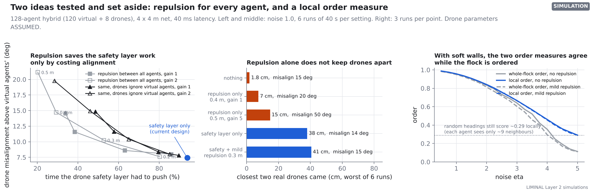
What it shows
Repulsion makes every agent turn away from anything closer than a set distance. It did cut how often the drone safety layer had to push, from 94% of the time to 80% (0.3 m, mild) or 20% (0.5 m, strong). But drone misalignment rose with it, from 14° to 15° and 33°. On its own, repulsion let drones come within 7 cm (mild) or 15 cm (very strong, with 50° misalignment). Local order matched whole-flock order while the flock was ordered (0.96 against 0.95 at noise 1) and stayed higher once it disordered (0.29 against 0.11 at noise 5).
How to read it
Left: each line is one family of repulsion settings, from 0.2 m (bottom right) to 0.5 m (top left); misalignment is shown above the virtual agents' own, so the extra turning that repulsion causes for everyone is taken out. The blue dot is the current design. Middle: the smallest distance between any two real drones over 6 runs of 40 s. Right: grey is whole-flock order, blue is local order (each agent's neighbourhood, averaged); the dotted line is what random headings score when each agent sees about 9 neighbours.
What it means for LIMINAL
Keep the separate safety layer as the only drone-protection rule, and keep the plain Vicsek rule for the flock: repulsion pulls agents off the flock's heading, which is exactly what the drones are supposed to follow. Soft walls already stop the walls from spoiling the whole-flock order, so the order parameter stays the headline number. Local order is still worth logging as a check; it never drops below about 0.3 with ~9 neighbours, so it cannot show full disorder.
9. The demo loop over UDP, in real time
Sims 1 to 8 run the drones, cameras and flock inside one program. The demo will not: the cameras, the laptop, the FPGA and the drones are separate machines joined by network links. Sim 8 builds that loop as it will run. The ground-station program (the real one for the demo) runs a 50 Hz control loop and talks over UDP to two stand-ins: the flock engine, using the FPGA's exact integer model, and a real-time simulation of the drones and cameras. The packet formats are written down in groundstation/PROTOCOL.md, so the FPGA can later take the engine's place without changing anything else.
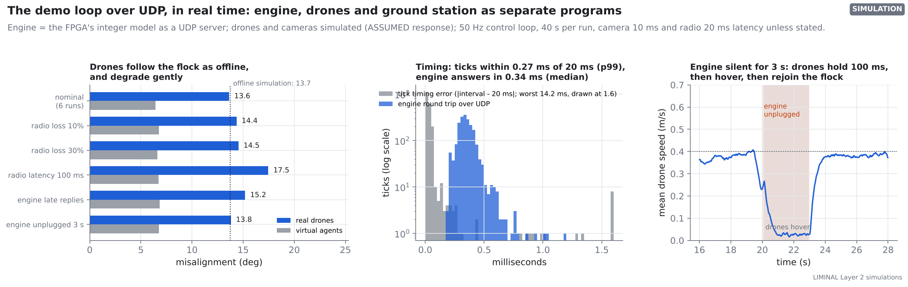
What it shows
In six nominal runs (40 s each) the drones followed the flock with 13.6° misalignment, against 13.7° in the offline simulation with the same engine, and came no closer than 40 cm. In the recorded run, 99% of control ticks came within 0.27 ms of their 20 ms slot, the worst tick was 14.2 ms late, and the engine answered in 0.34 ms (median). Each fault case below is a single run; the six nominal runs spread by 1.0° (standard deviation), so differences of that size are noise. Losing 197 of 1999 commands (10%) gave 14.4°, 30% loss 14.5°, and a 100 ms radio link 17.5°. With 10% of engine replies arriving too late, the loop held the last command for those ticks and reached 15.2°. When the engine went silent for 3 s, the drones' mean speed fell from 0.37 to 0.03 m/s (hover) and they rejoined the flock as soon as replies returned. Replaying a recorded nominal session through the integer model reproduced 1,999 of 1,999 heading sets the ground station received, and its first 40 steps through the Verilog gave: PASS: 128 agents x 40 steps match the Python model bit for bit (P=16 lanes, 1593 clocks per step, walled arena) (the testbench's clock count includes the start handshake)
How to read it
Left: each bar is the mean over 40 s of flight (6 runs for nominal). Grey bars are the virtual agents' own misalignment under the same measure, the baseline. Middle: grey is the time between control ticks, blue the time from sending a STEP packet to receiving the reply. Right: red shading is the engine outage, grey the time the ground station commanded a hover.
What it means for LIMINAL
The software side of the demo works end to end and reproduces the offline results, so the FPGA only has to speak the protocol. The loop handles the network faults it will meet: 10% and 30% command loss and late engine replies stayed within two standard deviations of nominal (single runs, so within noise); a 100 ms radio link (17.5°) cost clearly more than nominal (13.6°); and a dead engine makes the drones stop rather than fly blind. All of this runs on one laptop over localhost; the real Ethernet link to the board and the drones' radio will add their own delays, which the latency results (Figure 6) say stay harmless below about 100 ms.
10. Topology: a room graph for the radio, and a pocket detector that does not work yet
Sections 10 to 13 (Sims 9 to 12) move from the flock itself to what a search swarm does with it. In a collapsed building, a drone's map is a grid of free, blocked and unseen cells: about 30 KB for one 40 × 30 m floor at 10 cm. Sim 9 turns that grid into its shape. Rooms are the wide open areas (found with persistent homology (Edelsbrunner et al., 2002), which keeps only open areas that stand out by at least 0.4 m from their surroundings), doorways are the narrowest points between them, and Betti numbers count the separate free regions (b0) and the loops around obstacles (b1). Pockets are small, mostly walled-in patches the drone has not yet seen into, where a trapped person could be out of sight. The test: one simulated drone with a 6 m LiDAR explores 30 generated collapsed floors, each with about 6 victims, under four exploration rules. Each floor has four U-shaped pockets with a 0.9 m opening, and by design a victim sits in every reachable pocket, so 53% of all victims are in pockets; that choice favours any rule that looks into pockets.
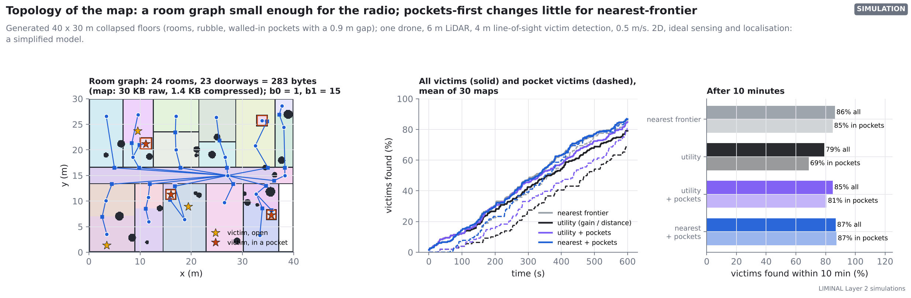
What it shows
The example floor reduces to 24 rooms and 23 doorways: 283 bytes, against 30 KB for the raw map and 1.4 KB compressed. Within 10 minutes, nearest-frontier exploration (always go to the closest edge of the unknown; Yamauchi, 1997) found 86% of victims and 85% of those in pockets. A rule that weighs new area against distance did worse, 79% and 69%, because it chases big open areas; sending it to pockets first raised that to 85% and 81%. Adding pockets-first to nearest-frontier gave 87% and 87%; the two rules found a different number of victims on only 3 of the 30 floors (the runs are paired on the same floors). But the pocket detector itself rarely found the real pockets. Checked on the drone's own map 2 and 4 minutes into a nearest-frontier search, it flagged 0 of 112 and 3 of 89 real pockets that were still unseen; of the 72 flags the pockets-first rules would act on at those moments, 2 were real pockets. While a pocket's surroundings are still unexplored, its inside is part of one large unseen region, so it does not stand out.
How to read it
Left: each room has its own shade; blue dots are rooms, squares are doorways, lines join rooms through doorways. Red outlines are the generator's pockets (not the detector's output), stars are victims. Middle: solid lines are all victims, dashed lines victims in pockets. Right: dark bars are all victims, light bars pocket victims.
What it means for LIMINAL
The room graph is the useful result: a few hundred bytes describe a floor, so drones can share the building's layout over a weak radio instead of whole maps. The pocket detector, as built, does not do its job during the search: the gain it gave the gain-driven planner came from flags on other small walled-in patches, which make that planner finish nearby corners before chasing big open areas (as nearest-frontier does anyway), not from recognising pockets. Detecting pockets reliably needs a different test, for example on the shape of the seen walls rather than on the unseen region; the topological check that does work is the end-of-search audit in Sim 12. This is a simplified model: flat 2D floors, perfect position, perfect LiDAR and a victim seen whenever it is in line of sight within 4 m.
| Exploration rule | All victims, 5 min | In pockets, 5 min | All victims, 10 min | In pockets, 10 min |
|---|---|---|---|---|
| Nearest frontier | 47% | 38% | 86% | 85% |
| Utility (new area / distance) | 42% | 28% | 79% | 69% |
| Utility + pockets first | 45% | 33% | 85% | 81% |
| Nearest + pockets first | 47% | 39% | 87% | 87% |
11. Locating a steady sound from the drone's own Doppler shift
A trapped person's phone, an alarm or a beacon makes a steady tone. A drone flying past hears it slightly higher while approaching and lower while moving away, and the exact shape of that pitch curve depends on where the sound is. Sim 10 tests whether one microphone on one drone, flying a known path at 2 m height and 1 m/s, can locate the source from that curve. The simulated microphone hears the tone (2.8 to 3.4 kHz; the drone does not know the exact frequency, only that it lies in the 2.5 to 3.7 kHz band it searches; quieter with distance), the drone's own propeller harmonics wandering in pitch, and broadband noise. The tracker follows the tone's pitch frame by frame; a grid search then finds the floor position and tone frequency that best explain the curve. Each case is 30 trials with random source positions; the search area brackets the area where sources are placed.
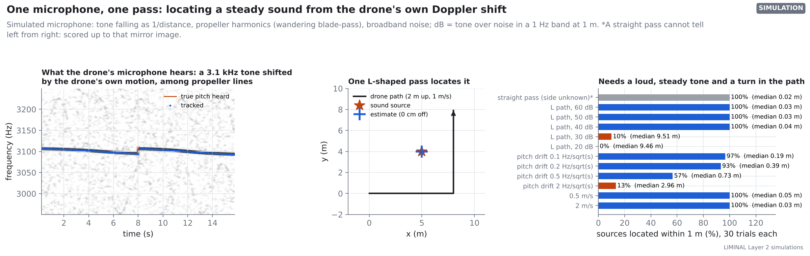
What it shows
With an L-shaped path and a loud, steady tone the method works: 100%, 100% and 100% of sources within 1 m at 60, 50 and 40 dB, with median errors of 3 to 4 cm, and the tracked pitch within 0.05 Hz (median). Below that it fails abruptly: 10% at 30 dB and 0% at 20 dB. A straight pass cannot tell which side of its line the sound is on: the source and its mirror image fit exactly equally well in every trial, so the side it reports is arbitrary. Allowing for that mirror image, 100% of straight-pass estimates were within 1 m. A source whose own pitch wanders breaks it fast: 97%, 57% and 13% within 1 m at 0.1, 0.5 and 2 Hz/√s of drift. Flight speed made no difference (100% at 0.5 m/s, 100% at 2 m/s).
How to read it
Left: darker means louder. The pitch shifts by a few hertz as the drone approaches, passes and turns; the step at 8 s is the turn. Right: blue bars at least half within 1 m, orange bars below half, grey the straight pass, scored up to its left/right mirror image. dB is the tone's power at 1 m over the background noise in a 1 Hz band, so at 40 dB the tone, at 1 m, carries about as much power as all the background noise across the 8 kHz the microphone records: clearly audible close up, and 14 dB weaker at 5 m.
What it means for LIMINAL
One drone and one microphone can locate a steady electronic tone (an alarm, a phone ringtone, a beacon) on a single pass, as long as the path turns. It will not locate a human-blown whistle or a voice, whose pitch wanders far more than these limits. It is a simulation without echoes, walls or a moving source, and with the drone's path known exactly. Echoes in a real building are the main open question, and the next step is a recording on a real drone over a phone playing a tone.
12. Turing patterns for spreading the swarm out
Turing (1952) showed that two chemicals that react and spread at different rates can form spots and stripes from an even start; Gierer and Meinhardt (1972) recast this as an activator, which boosts itself, and an inhibitor, which spreads faster and holds it back. Such a system makes evenly spaced spots from local rules alone. Sim 11 uses the Gierer–Meinhardt model as a map of where the drones should be: each drone flies to a spot, and searched ground stops producing activator, so the spots move onto ground nobody has searched yet. It is compared with four standard ways to cover an area: a random walk; lawnmower strips (each drone sweeps its own strip, assigned by distance; a drone that finishes takes over the nearest unswept strip, including those of failed drones); a greedy rule (each drone heads for the nearest unsearched spot); and Lloyd/Voronoi coverage (each drone heads for the centre of the unsearched part of the area closest to it; Cortés et al., 2004). The Turing pattern is run two ways: the field alone, and the field with the greedy rule as a mop-up for a drone whose spot is already searched or that has no spot. Eight drones with a 2 m sensing radius search a 32 × 32 m area at 1 m/s, launched from one edge; each case is 10 runs, with and without 3 drones failing at 15 s.
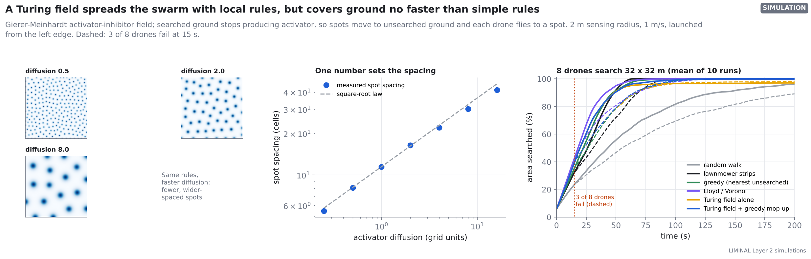
What it shows
The spot spacing follows the square-root law: on log-log axes the measured slope is 0.48 against the theory's 0.5, from 5.5 cells at diffusion 0.25 to 41.6 at 16. With all 8 drones, Lloyd/Voronoi searched 90% of the area fastest (41 ± 2 s); the Turing field alone (49 ± 4 s), the Turing field with mop-up (49 ± 4 s), lawnmower strips (48 ± 1 s) and the greedy rule (48 ± 7 s) were all about the same, and the random walk took 135 ± 23 s. The field alone never finished: it stopped at 97%, because spots cannot form in small leftover patches; with the mop-up it reached 100%. When 3 drones failed at 15 s, every method except the random walk still reached 90% and all but the Turing field alone (98%) finished; their times to 90% (66 to 69 s) were within the run-to-run spread of each other.
How to read it
Left: darker blue is more activator; the drones fly to the dark spots. Middle: log-log axes, so a straight line with slope 0.5 is the square-root law. Right: each line is the mean of 10 runs; times to 90% are in the table below as mean ± standard deviation over the 10 runs.
What it means for LIMINAL
On coverage speed, the Turing field is no better than simple rules: a greedy rule or lawnmower strips that hand over unfinished strips do as well, and Lloyd/Voronoi is faster with all drones flying. The field does spread the drones on its own, but it needs a mop-up rule to finish. What it still offers is practical: the whole field is one small local stencil per grid cell, the kind of computation the FPGA does well, and one number (the diffusion rate) sets how far apart the drones spread. Whether that matters more than speed is a design choice, not a result. Here the field, like the other methods, is computed centrally; drones are points flying straight lines in an empty square, with no obstacles or collision checks.
| Method | 90% searched, 8 drones | Final, 8 drones | 90% searched, 3 fail | Final, 3 fail |
|---|---|---|---|---|
| Random walk | 135 ± 23 s | 96% | 165 ± 24 s (6 of 10 runs) | 89% |
| Lawnmower strips (reassigned on failure) | 48 ± 1 s | 100% | 69 ± 5 s | 100% |
| Greedy: nearest unsearched cell | 48 ± 7 s | 100% | 69 ± 12 s | 100% |
| Lloyd / Voronoi | 41 ± 2 s | 100% | 67 ± 6 s | 100% |
| Turing field alone | 49 ± 4 s | 97% | 66 ± 6 s | 98% |
| Turing field + greedy mop-up | 49 ± 4 s | 100% | 66 ± 5 s | 100% |
13. When is a search finished?
The LIMINAL design says a search is complete when the count of unexplored regions (the Betti number β₀ of the unseen part of the map) reaches zero. Sim 12 tests that on the 30 floors of Sim 9. One drone explores with nearest-frontier exploration and, unlike in Sim 9, does not stop when it has found every victim, because a real drone cannot know that. Afterwards we ask when each stopping rule would have ended the search and what it would have missed. Besides victims, the score counts unseen open floor: truly free space connected to the start, that the drone never saw (ground truth is used only for scoring; free space walled off completely from the start is not counted). The topological rule is tested in two forms. The audit runs once the planner has no frontier left: it flags every unseen region of at least 1 m² with an opening onto seen free space, plus every closed-off unseen region of at least 4 m² and 0.5 m across (it could be solid, or a room seen only through a crack), and hands the list to rescuers. The full rule then also flies back to look into each flagged region before reporting.
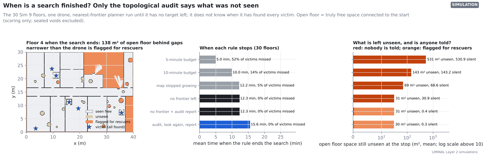
What it shows
Victims were placed only where the drone can fly, and stopping when no frontier is left found all 191 of them, after 12.3 minutes on average. Stopping after 10 minutes would have missed 26 (14%), after 5 minutes 99 (52%), and when the map stopped growing 9. But when the frontier ran out, an average of 31 m² of open floor was still unseen (more than 5 m² on 15 of 30 floors, up to 158 m²): mostly rooms and corners behind gaps narrower than the drone. Frontier exploration says nothing about them. The audit reported all but 0.4 m² of it on average (at most 1.2 m² on any floor), at the cost of 5.6 flags per floor, of which 31 of 168 held at least 1 m² of open floor and 118 held almost none (less than 0.25 m²: the cores of rubble heaps and wall cavities). Flying back to look into every flag took 3.3 more minutes, found no further victims, and shrank the unseen open floor only from 31 to 30 m².
How to read it
Middle: bars are the mean stop time over the 30 floors; the label adds the share of all victims not yet found at that time. Right: red is unseen open floor nobody is told about, orange the part inside regions the audit flags. Only the two audit rules flag anything, so for the others all of it is red. Left: orange regions are what the audit hands to rescuers; on this floor 138 m² of open floor lies behind gaps the drone cannot pass, next to a space walled off completely.
What it means for LIMINAL
The topological idea earns its place, but not as a proof that the search is complete. The unseen part of a real map never reaches β₀ = 0 (the insides of walls and rubble heaps are never seen), and a drone cannot enter gaps narrower than itself. What works is: explore until no frontier is left, then count the unseen regions and hand rescuers a short list of the ones that could hide a person and that the drone could not see into. That costs no extra flight and leaves almost nothing unreported. Flying back to look again is not worth it here. The audit cannot tell a rubble core from a hidden space, so most flags are false alarms; a thermal or acoustic check at each flag, or a smaller drone, is the way to clear them. Same simplified model as Sim 9 (2D, perfect position and LiDAR), and the victims were placed only where the drone can fly, so this test cannot show a victim saved by the audit; it shows the unseen floor space where one could be.
| Stopping rule | Mean stop time | Victims missed (of 191) | Unseen open floor at the stop (mean) | of which nobody is told |
|---|---|---|---|---|
| Stop after 5 minutes | 5.0 min | 99 (52%) | 531 m² | 530.9 m² |
| Stop after 10 minutes | 10.0 min | 26 (14%) | 143 m² | 143.2 m² |
| Stop when the map stops growing (< 1 m² in 60 s) | 12.2 min | 9 (5%) | 69 m² | 68.6 m² |
| Stop when no frontier is left | 12.3 min | 0 (0%) | 31 m² | 30.9 m² |
| No frontier left, then audit the map and report | 12.3 min | 0 (0%) | 31 m² | 0.4 m² |
| Audit, fly back to look into each flagged region, report | 15.6 min | 0 (0%) | 30 m² | 0.3 m² |
14. A ground robot steers the flock without sending a message
The architecture says the ground robots (UGVs) exist to break the swarm's symmetry: identical drones following identical rules have no preferred direction, and a robot that looks different gives them something to organise around. It sends no messages; the drones simply see it. Sim 13 tests the simplest form of this, following. A UGV drives through a flock of 128 at the drones' speed and turns 90° left or right every 3,000 steps. A drone that sees it (within one interaction radius) counts the UGV's heading w times in its neighbour average; drones farther away hear of a turn only through their neighbours. The UGV ignores the drones. It is compared with no UGV and with a radio command that gives every drone the UGV's heading (an upper bound the no-command design gives up). The score is the share of the flock's motion that goes the UGV's way (1: every drone moves along the UGV's heading; 0: no net motion along it). Eight runs per point, each with eight turns.
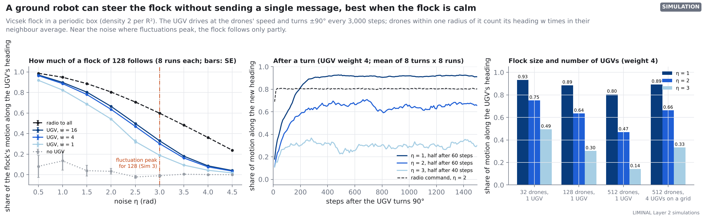
What it shows
With no UGV the flock goes its own way (score about 0). With a UGV of weight 4 the score is 0.96 at noise 0.5, 0.89 at 1.0, 0.64 at 2.0 and 0.30 at 3.0, the noise where the flock of 128 fluctuates most (Sim 3); a radio command to every drone scores 0.60 there. Weight 1 (the UGV counts as one more neighbour) gives 0.19 at 3.0; weight 16 gives 0.33, hardly more than weight 4. After a turn, half of the final response comes within 30 to 60 steps (weight 4, noise 0.5 to 3; about 1 to 2 interaction radii of travel; measured on the average response curve, sampled every 10 steps, so at noise 3 single runs often reach half on the first sample). One UGV steers a flock of 32 better (0.49 at noise 3) and a flock of 512 worse (0.14). Comparing at one noise value overstates this: noise 3 is still on the ordered side of the fluctuation peak for 32 drones and already past it for 512 (Sim 3), and the flock of 512 is less ordered there (order 0.29, against 0.44 for 128), so part of the drop is simply disorder. At noise 1, where all three sizes are ordered, the scores are closer: 0.93, 0.89 and 0.80. Four UGVs in the flock of 512 give 0.33 at noise 3, a little more than one UGV in 128 (0.30). That test is weaker evidence than it looks: the four UGVs sit on a regular grid and share one heading, which makes the 512-drone box a 2 × 2 copy of the 128-drone setup, so a similar score is close to guaranteed by construction. UGVs at random positions, or with different headings, were not tested.
How to read it
Left: each line is a way of using the UGV; the dashed black line is the radio command, the dotted grey line no UGV; bars are standard errors over the 8 runs, mostly smaller than the dots. The red line marks the fluctuation peak of a flock of 128 from Sim 3. Middle: the share of motion along the new heading, averaged over all turns and runs; it starts near 0 because just before a turn the flock moves at 90° to the new heading. Right: the same score for different flock sizes and numbers of UGVs.
What it means for LIMINAL
The mechanism works: a robot that only drives, and is seen, steers the flock, and no radio is involved. Two things limit it. First, it pulls against the plan to run the flock near its critical point: at the fluctuation peak only about a third of the flock's motion follows the UGV, against nine-tenths at low noise, so a mission that needs steering should run calmer than the peak (noise around 1 to 2 here). Second, one UGV's grip weakens as the flock grows, even at low noise. Adding UGVs helps, but how many a large flock needs is not settled, because the four-UGV test was a regular tiling with one shared heading; one UGV per 128 drones is a starting point to test, not a measured requirement. For the demo (8 drones among about 120 virtual agents) one UGV is enough. The model is an open box with no walls, the drones see the UGV perfectly within one radius, and only following was tested; clustering around, avoiding or orbiting a UGV, also named in the architecture, were not.
15. Can the flock compute? Reservoir computing
The architecture's most speculative idea is to use the swarm as a reservoir computer: a UGV moving through the flock is the input, the flock's own dynamics transform it, and only a simple linear readout is trained, as in the bucket of water used as a computer (Fernando and Sojakka, 2003). The document itself names three problems: no task is defined, the reservoir must forget old inputs (the echo-state property) while a flock near its critical point remembers for a long time, and the input may drown in the flock's own noise. It asks whether the flock computes best at its critical point. Sim 14 gives it a task and measures all three. The UGV's heading carries a random input, a new value every 50 steps. A linear readout of a coarse view of the flock (a 4 × 4 grid of mean heading and density, plus order and mean heading: 51 numbers, nothing read from the UGV) is trained on three runs and scored on two fresh runs, to output the current input, the input k intervals ago (the sum of the scores for k = 1 to 10 is the memory capacity; Jaeger, 2001), and the product of the current and the previous input, which needs both memory and a nonlinearity. Scores are r² on the test runs (1 perfect, 0 useless). For scale, a standard software reservoir with 51 nodes and no noise is trained and scored the same way.
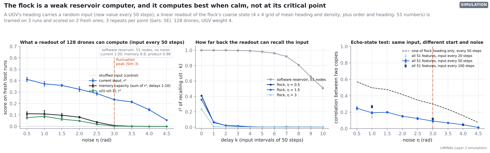
What it shows
The flock does respond to the input: with the input shuffled against the targets every score is 0.00, and with the real input the readout recovers the current input with r² 0.41 at noise 0.5, falling to 0.23 at noise 3 (the fluctuation peak of a flock of 128) and 0.05 at 4.5. It hardly remembers: the memory capacity is 0.11 at noise 0.5 and 0.01 at noise 3, out of a possible 10; the input one interval back is already almost gone. The product task scores at most 0.12 (any noise, any input rate). Holding each input for 100 steps raises the current-input score to 0.62 at noise 1 but lowers the memory to 0.06. The 51-node software reservoir scores 1.00 on the current input, a memory capacity of 8.8 and 0.98 on the product. In the echo-state test, two copies of the flock driven by the same input agree with a correlation of only 0.25 (all features) or 0.57 (the sine of the flock's heading) at noise 0.5, falling to 0.09 and 0.30 at noise 3.
How to read it
Left: each line is one task, scored on runs the readout never saw; bars are standard errors over 3 repeats. The grey box gives the software reservoir's scores, which are far off this scale. Middle: r² for recalling the input k intervals back; the flock's line drops to near zero after k = 0. Right: if the input decided the flock's state, two copies driven by the same input would agree (correlation 1); low values mean the flock's own noise and starting state decide most of it.
What it means for LIMINAL
The answer to the document's research question is no, in this model: the flock computes best when it is calm and ordered, and worse the closer it gets to its critical point and beyond, because its own noise swamps the input there. Even at its best it is a weak reservoir: what the readout can recover is less than a single running average of the input would hold (whose scores over all delays add up to at most 1; here they add up to at most 0.68, at noise 1 with each input held 100 steps), and a 51-node program on any microcontroller does vastly better. The echo-state test shows why: most of the flock's state comes from its own noise, not from the input. Reservoir computing should not be presented as a working part of LIMINAL. It stays a research question; a better input channel (several UGVs, or the input fed to many drones) and a richer readout are the first things to try. Only one model was tested: 128 drones, one UGV of weight 4, a coarse-grid readout and one input rate per run.
16. Predicting the flock with a linear (Koopman/DMD) model
The architecture proposes treating the whole swarm as one machine: instead of the drones' positions and headings, track a set of measurable quantities (observables) and learn from data a matrix that steps them forward in time. Koopman (1931) showed that such a linear description exists in principle; dynamic mode decomposition (DMD; Schmid, 2010) estimates it from data, and DMD with control (Proctor et al., 2016) adds an input. The promised benefits are fast prediction (one matrix multiplication), dynamics learned from data, and control by linear methods. Sim 15 learns such a model for a flock of 128 from 51 coarse observables (a 4 × 4 grid of mean heading and density, plus order and mean heading) sampled every 10 steps, fitted on three runs of 50,000 steps and tested on two fresh runs. It is compared with simple predictors: the value stays as it is; the long-run mean; a one-number model of the order alone (it relaxes toward its mean at a fitted rate, AR(1)); for the heading, “always the average heading of the training runs”; and, when a UGV steers the flock, “the flock heads where the UGV is heading now” and a one-number smoother that is given the same known UGV moves as the model: start from the flock's current heading and, every 10 steps, turn a fixed fraction of the way toward the UGV's heading (the fraction fitted on the training runs). In the steered case the UGV's heading (a new random value every 50 steps) is given to the model as a known input. The smoother and the average-heading rule were added after an independent review pointed out that the first comparison had only baselines that ignore the UGV's future moves.
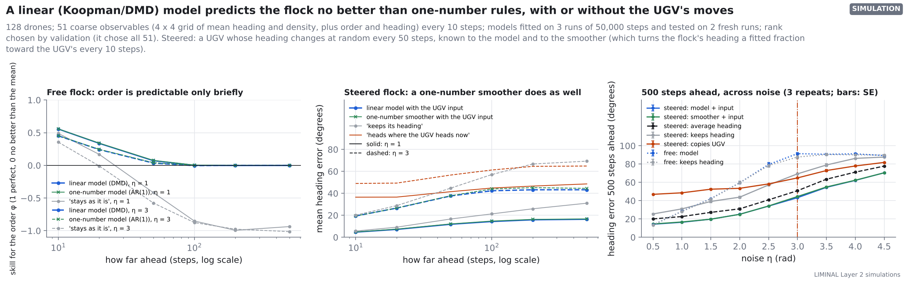
What it shows
For the free flock the linear model predicts the order 10 steps ahead with skill 0.56 at noise 1 and 0.45 at noise 3 (1 is perfect, 0 no better than the long-run mean), exactly what the one-number model gets (at that horizon they differ by less than 0.01 at any noise). Further ahead the full model is never better and is up to 0.03 worse (at noise 0.5); by 100 steps both are at about zero skill at every noise (between -0.01 and 0.01). The free flock's heading is predicted no better than by assuming it keeps its heading (28° against 28° 500 steps ahead at noise 1). With the UGV's moves known, the model predicts the steered flock's heading 500 steps ahead to within 16° at noise 1. The one-number smoother, given the same moves, gets 17°; at every noise and horizon the two differ by at most 2°. The rules that ignore the UGV's future moves do worse: 23° for always the average heading, 31° for keeping the heading and 49° for copying the UGV's current heading. At noise 3 the five figures are 43°, 45°, 51°, 69° and 65°. (The average-heading rule does well because the UGV's random headings are centred on one direction, so the flock does not wander far from it.) Validation always chose the largest rank offered (rank 51), so the model is in effect an ordinary least-squares fit on all 51 observables plus the input; the rank-truncation step of DMD never came into play.
How to read it
Left: skill above 0 means the prediction beats the long-run mean; the blue and green lines lie on top of each other. Middle and right: mean angle between the predicted and the true flock heading; lower is better; the blue model line and the green smoother line lie on top of each other; the right panel takes the 500-step point for every noise level (bars: standard error over 3 repeats).
What it means for LIMINAL
In this model the linear (Koopman/DMD) model brings no benefit over one-number rules. Prediction is a single 51 × 51 matrix multiplication, trivial for the FPGA, but on its own the flock is predictable only for a few tens of steps, and the 51-number model adds nothing over one number for the order: what is left is noise-driven, and no model can predict that. When the UGV's planned moves are known, the flock's future heading can be predicted, but almost all of that comes from the moves themselves: a one-number smoother (“the flock turns a fixed fraction of the way toward the UGV every 10 steps”) does as well as the full model at every noise level. So, in this model, predicting the result of UGV moves needs only that one fitted number, the flock's turning lag. The first version of this section said the model predicted the steered flock clearly better than simple rules; that comparison used only rules that ignore the UGV's future moves, and it is withdrawn. Not tested: closing the loop (choosing UGV moves with the model), other observables (which might capture what one number cannot), and real drones with their delays.
17. Marks instead of radio (stigmergy)
Ants coordinate through marks left in their surroundings rather than messages (stigmergy; Grassé, 1959). The architecture proposes the same for LIMINAL: marks written into the building cannot be jammed, they last after the drones that wrote them are gone, and rescuers can read them. Sim 16 tests whether that is worth anything in a search. Six drones search the 20 collapsed floors of Sims 9 and 12 from one entrance (launched 15 s apart, 0.5 m/s, searching 3 m around them along free space; each heads for the nearest unsearched floor it knows of, with a small personal preference so they do not all pick the same spot). With the radio jammed they can share nothing, or drop simple marks that say “searched around here”, or drop data tags (like RFID tags with memory) that store the dropper's whole searched-map; another drone reads a mark or tag within 3 m. These are compared with an ideal radio that is not jammed. A persistence test then lets a first wave fly for 3 minutes and land, and sends a second wave that remembers nothing; each sharing method is run with and without the first wave's marks, and with the first wave's whole map handed over at the door as a reference. The main measure is the time until 90% of the floor is searched, compared floor by floor; the last few percent are slow mop-up next to walls and vary a lot from floor to floor.
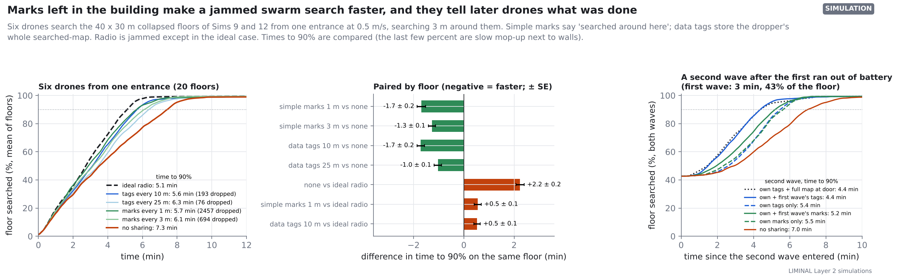
What it shows
With an ideal radio, 90% of the floor was searched in 5.1 min; with no sharing it took 7.3 min (134 ± 10 s longer on the same floor). Simple marks every 1 m brought that to 5.7 min and data tags every 10 m to 5.6 min, recovering 75% and 76% of what the jammed radio lost; marks every 3 m recovered 57% and tags every 25 m 46%. The cost is the number dropped: about 2,457 marks per floor at 1 m spacing (694 at 3 m), against 193 tags at 10 m and 76 at 25 m. At 99% the ideal radio's lead remains (9.4 min alone against 7.4; 119 ± 33 s on the same floor), but the gains from marks and tags (28 to 71 s) are within the floor-to-floor spread of the slow last percent. In the persistence test the first wave searched 43% of the floor and left 39 data tags. A second wave reading them reached 90% in 4.4 min, 59 ± 7 s sooner than with its own tags alone and as fast as when handed the first wave's whole map (4.4 min). The first wave's simple marks saved only 19 ± 7 s.
How to read it
Left: each line is the mean over 20 floors; the dotted line marks 90%. Middle: for each floor, the time to 90% with one method minus with another; negative means the first method was faster; bars are standard errors over the 20 floors. Right: the second wave's progress, counting what the first wave searched (so every line starts at the first wave's share); solid lines read the first wave's marks or tags, dashed lines only their own.
What it means for LIMINAL
Stigmergy earns its place as the fallback when the radio is jammed: marks recover about three-quarters of what is lost, and they keep working after the drones that wrote them have gone. The two kinds of mark do different jobs. Simple marks need to be dense (hundreds to thousands per floor) and tell a later wave little; data tags are needed in far smaller numbers (about 200 per floor at 10 m spacing; a first wave's 39 were enough for the second wave) and carry almost all of what a later wave needs. So data tags are the version to build, if a drone or UGV can carry and place them; that hardware is the open question, and so is the tag's memory: each tag here stores the dropper's whole searched-map, 15 kB as a plain bitmap at 10 cm, or about 1.1 kB compressed (1.5 kB at most, measured on three floors). That is more than common RFID and NFC tags hold (usually under 1 kB of user memory); large-memory tags hold a few kB. Read time, read range and a capped payload were not modelled, and here the drones place the tags themselves where the architecture gives the job to UGVs. The model is ideal in other ways too: 2D, perfect positions, every mark within 3 m read without error, nothing damaged by debris. Rescuers reading the marks was not tested.
18. The communication layer: merging after a split, missing reports, unsynchronised clocks
The architecture keeps a radio mesh for measurement only, never for commands, and makes two claims about it: the shared coverage record is a CRDT (a conflict-free replicated data type; Shapiro et al., 2011), so when the network splits and rejoins the records merge exactly; and the order parameter and other collective measurements need every drone's state at the same moment. Its open questions ask what happens when drones drop out of the count and when clocks disagree. Sim 17 tests the three. Mesh: the Sim 16 search with a radio of limited range (5, 10 or 20 m along free space, a rough stand-in for walls weakening the signal); drones in reach of each other, directly or through other drones, merge their searched-maps by set union, and a group that is cut off keeps searching and merges when it reconnects. Missing reports: a free flock of 128 in which only n drones' reports arrive, either a random n or the n nearest one point (as if only drones near the antenna get through); the plain order parameter of the reports is compared with the true one and with a corrected estimate that removes the known bias of small samples (exact for drones missing at random). Clocks: a flock steered by a UGV that turns 90° every 3,000 steps; each drone's clock is off by a fixed amount, up to ±s steps, so a “snapshot” mixes headings from different moments.
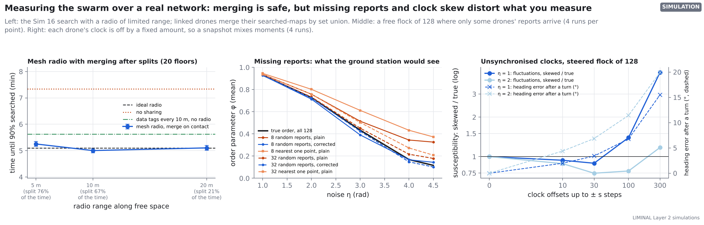
What it shows
Mesh: with a 5, 10 or 20 m radio the drones were split into separate groups 76%, 67% and 21% of the time, yet 90% of the floor was searched in 5.3, 5.0 and 5.1 min, against 5.1 min with an ideal radio (paired differences +9 ± 5, -6 ± 5 and +0 s; with 20 m the times matched the ideal radio on 20 of 20 floors) and 7.3 min with no sharing. No drone ever believed a cell searched that was not (0 such cells in all runs; guaranteed by construction, since beliefs only grow from real observations). Missing reports: with 8 random reports from a disordered flock (noise 4.5, true order 0.12) the plain order parameter reads 0.33; the corrected estimate reads 0.14; 8 reports from one part of the flock read 0.37. At noise 3 (true 0.43) the three read 0.51, 0.39 and 0.61; with 32 reports the plain value is off by at most 0.06. Clocks: with offsets up to ±10 steps the snapshot order is off by 0.008 (noise 1) and the heading after a turn by 2°; with ±300 steps, by 0.044 and 15°, the order seems to drop by 0.15 after every turn, and the fluctuation measure (susceptibility) comes out 4.4 times too large. At noise 2 small offsets make it 0.75 times the true value (too small) and ±300 steps 1.2 times (too large).
How to read it
Left: blue is the mesh radio (bars: standard error over 20 floors); the horizontal lines are the Sim 16 results on the same floors with the same drones. Middle: the black line is the truth; red lines are the plain estimate from random reports, blue the corrected estimate, orange the plain estimate from the drones nearest one point; solid 8 reports, dashed 32. Right: solid lines (left axis, log scale) are the susceptibility from skewed snapshots divided by the true one; dashed lines (right axis) the heading error in the 300 steps after a turn. If one step is 0.1 s (0.3 m/s with a 1 m radius), ±10 steps is ±1 s and ±300 steps is ±30 s.
What it means for LIMINAL
The merge claim holds, but this test is weak evidence for it: a record that only grows and is merged by set union is conflict-free by construction (merging cannot invent coverage, so the zero above is guaranteed rather than measured), and message delay, partial delivery and concurrent edits were not modelled. What the test does show is that merging is cheap: for this search even a short-range mesh that is split most of the time comes within about 10 s of an ideal radio. The two measurement questions have clear answers. The order parameter does misread a drop in the number of reports as a change in the flock: with few reports a disordered flock looks ordered. Correct for the sample size, which works when reports go missing at random (the correction is exact on average for the square of the order parameter, so the corrected order itself still reads a little low at intermediate order: 0.39 against a true 0.43 at noise 3 with 8 reports), and when they go missing by place (out of radio range) treat the number as local order of the drones heard, not of the swarm. Clock errors of about a second or less hardly matter for the order and the heading (the susceptibility is then off by up to 12%); tens of seconds make every turn look like a loss of order and distort the susceptibility, here up to 4.4 times too large. Time-stamp states against one clock (in the demo, the motion-capture system's) and keep offsets well under a second. Not modelled: radio packet loss inside a group, bandwidth limits, moving rubble (a map that changes is no longer a pure union of observations), and clocks that drift rather than sit at a fixed offset.
What should change
- Size the demo at about 128 agents in the net. Fly the 8 drones with ~120 virtual agents at the same density as the simulations, and show the large-flock physics on screen. A co-moving virtual world, where the net is a window that travels with a much larger flock, is the advanced version.
- Add a safety layer before any multi-drone flight. The Vicsek rule has no repulsion. Push real drones apart below about 0.5 m, and keep soft walls with a 0.3 m margin inside the net.
- Measure the drones first. Response time, acceleration limit and tracking noise are assumptions here, and response time is the biggest single lever. One hover-and-step test on the rig replaces all of them.
- Budget the loop at under 100 ms. Time-stamp camera frames and measure the full loop on the rig.
- Do not add repulsion to the flock rule. Tested in Sim 4e: it reduces the safety layer's work only by costing drone alignment (the more work it saves, the more alignment it costs), and on its own it does not keep drones apart. Virtual agents may overlap on screen; that is acceptable because they are not physical.
- Search methods to keep. Share room graphs, not maps, between drones (a few hundred bytes per floor; Sim 9). End a search when no frontier is left, then run the topological audit and hand rescuers the list of unseen regions the drone could not look into; do not claim β₀ = 0 as proof of completeness (Sim 12). Try Doppler localisation on a real drone with a phone playing a steady tone before relying on it (Sim 10). To spread drones over open ground, Lloyd/Voronoi was fastest and a greedy rule matched the Turing field; keep the Turing field only if a local, FPGA-friendly rule matters more than speed (Sim 11).
- Ground robots (UGVs): keep them, and size them. A UGV that only drives steers the flock with no radio (Sim 13), but its grip is weak at the critical point. Steer in a calmer regime, and expect larger flocks to need more UGVs; one per 128 drones is a starting point to test (the four-UGV run was a regular tiling with one shared heading), not a measured requirement.
- Do not present reservoir computing as part of the system. In Sim 14 the flock was a weak reservoir, best when calm and worst near its critical point; keep it as a research question.
- Do not build a Koopman/DMD model for now. On its own the flock is not predictable beyond a few tens of steps; with the UGV's planned moves its heading is predictable, but a one-number smoother (the flock's turning lag) does as well as the 51-number linear model (Sim 15). Use the lag to plan UGV moves; keep Koopman/DMD as a research question.
- Build data tags, not paint marks, for the jammed-radio case. About 200 tags per floor (one every 10 m) that store the dropper's searched-map recover about three-quarters of the time a jammed radio costs and tell a later wave everything it needs (Sim 16). Each needs about 1.5 kB for a compressed map, more than most RFID or NFC tags hold. Who carries and places them, drone or UGV, and which tag holds that much, are the hardware questions to answer.
- Keep the mesh for measurement, and fix how it measures. Merging searched-maps by set union is conflict-free by construction, and a short-range mesh is enough for this search (Sim 17); message delay and loss are still to be tested. Correct the order parameter for the number of drones heard, treat reports from one part of the swarm as local, and time-stamp every state against one clock to well under a second.
- FPGA version 2. (Walls are done in version 1.1.) Share one pipelined CORDIC between lanes, add grid neighbour search, raise the lane count, and add an Ethernet (UDP) link to the laptop that speaks
groundstation/PROTOCOL.md; the ground-station software for it is done (Sim 8). Then run Vivado for real resource and timing numbers.
Assumptions to replace with measurements
| Quantity | Value used | Why it matters | How to measure |
|---|---|---|---|
| Drone velocity response time | 0.3 s | Biggest effect on alignment (Figure 7) | Command a velocity step under mocap and fit the rise |
| Acceleration limit | 3 m/s² | Limits how sharply a drone can turn with the flock | Same step test |
| Velocity disturbance | 0.05 m/s | Small effect up to 0.1 m/s | Hover test, spread of tracked velocity |
| Camera position noise | 3 mm | Sets how well headings can be measured | Static marker, spread of tracked position |
| Loop latency | 40 ms | Above ~100 ms alignment degrades (Figure 6) | LED flash seen by camera vs command time stamps |
| Flight speed / radius | 0.4 m/s / 0.5 m | Set the flock's length and time scales | Design choices; revisit after the first flights |
How this was made
Python with NumPy and Numba; every run uses fixed random seeds, except the real-time ground-station runs (Sim 8), whose timing depends on the computer. The FPGA check uses Icarus Verilog against test vectors written by the Python fixed-point model. Run pytest for the automatic checks, and see README.md for the commands that regenerate each figure. The live flock is in the browser explorer, and three mechanisms (flocking, reaction–diffusion patterns, counting unexplored map regions) run live in the Layer 2 demo.
Sources
- Vicsek, Czirók, Ben-Jacob, Cohen, Shochet, Novel type of phase transition in a system of self-driven particles, Physical Review Letters 75, 1226 (1995).
- Chaté, Ginelli, Grégoire, Raynaud, Collective motion of self-propelled particles interacting without cohesion, Physical Review E 77, 046113 (2008).
- Attanasi, Cavagna et al., Finite-size scaling as a way to probe near-criticality in natural swarms, Physical Review Letters 113, 238102 (2014); arXiv:1412.6975.
- Ballerini et al., Interaction ruling animal collective behavior depends on topological rather than metric distance, PNAS 105, 1232 (2008).
- Hönig et al., Mixed Reality for Robotics, USC (IROS 2015).
- Yamauchi, A frontier-based approach for autonomous exploration, IEEE CIRA (1997).
- Edelsbrunner, Letscher, Zomorodian, Topological persistence and simplification, Discrete & Computational Geometry 28, 511 (2002).
- Turing, The chemical basis of morphogenesis, Philosophical Transactions of the Royal Society B 237, 37 (1952).
- Gierer, Meinhardt, A theory of biological pattern formation, Kybernetik 12, 30 (1972).
- Cortés, Martínez, Karataş, Bullo, Coverage control for mobile sensing networks, IEEE Transactions on Robotics and Automation 20, 243 (2004).
- Couzin, Krause, Franks, Levin, Effective leadership and decision-making in animal groups on the move, Nature 433, 513 (2005).
- Fernando, Sojakka, Pattern recognition in a bucket, Advances in Artificial Life (ECAL 2003), Lecture Notes in Computer Science 2801 (2003).
- Jaeger, Short term memory in echo state networks, GMD Report 152, German National Research Center for Information Technology (2001).
- Koopman, Hamiltonian systems and transformation in Hilbert space, PNAS 17, 315 (1931).
- Schmid, Dynamic mode decomposition of numerical and experimental data, Journal of Fluid Mechanics 656, 5 (2010).
- Proctor, Brunton, Kutz, Dynamic mode decomposition with control, SIAM Journal on Applied Dynamical Systems 15, 142 (2016).
- Grassé, La reconstruction du nid et les coordinations interindividuelles chez Bellicositermes natalensis et Cubitermes sp., Insectes Sociaux 6, 41 (1959).
- Shapiro, Preguiça, Baquero, Zawirski, Conflict-free replicated data types, Stabilization, Safety, and Security of Distributed Systems (SSS 2011), Lecture Notes in Computer Science 6976 (2011).
- Preiss, Hönig, Sukhatme, Ayanian, Crazyswarm: A Large Nano-Quadcopter Swarm, USC (ICRA 2017).